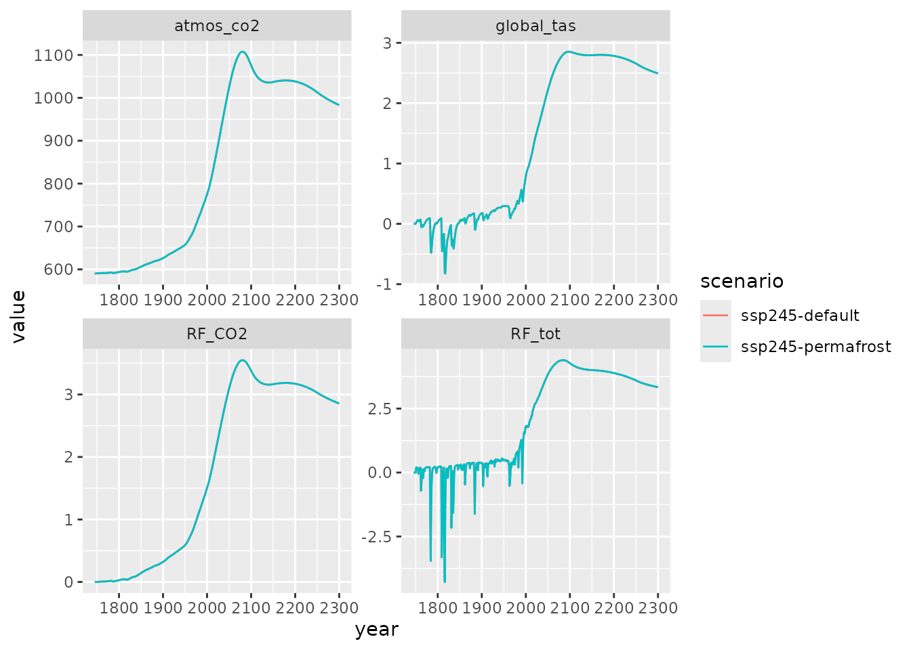
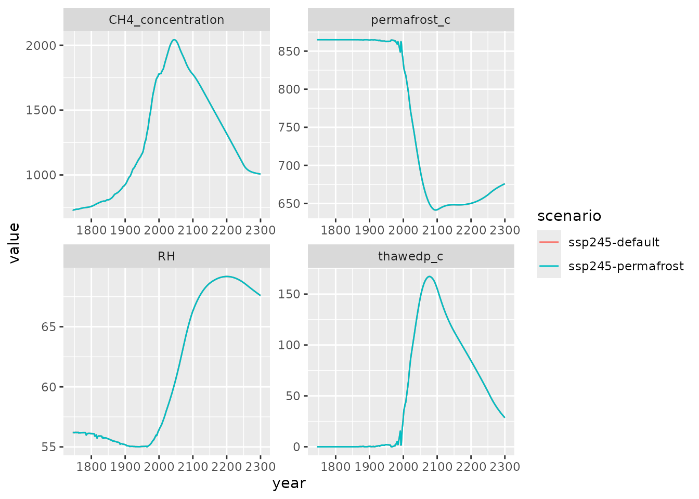

Hector version 3 introduces a new capability to the model: permafrost thaw. The is important because enormous amounts of organic carbon are stored in high-latitude permafrost soils, frozen pools that can destabilized, thawed, and released to the atmosphere by climatic warming. This process has the potential to significantly accelerate climate change (Schuur et al. 2015).
It is important to note that (1) permafrost is currently OFF by default, and (2) the model’s permafrost dynamics have not been fully checked against the original implementation (Woodard et al. 2021). As a result, this is currently an EXPERIMENTAL feature that is not ready for scientific simulations.
Woodard, D. L., Shiklomanov, A. N., Kravitz, B., Hartin, C., Bond-Lamberty, B. (2021). A permafrost implementation in the simple carbon-climate model Hector v.2.3pf. Geosci. Model Dev., 14, 4751–4767. https://doi.org/10.5194/gmd-14-4751-2021
Setup
Start by setting up a default Hector core and running it:
library(hector)
ini <- system.file("input/hector_ssp245.ini", package = "hector")
core <- newcore(ini, name = "ssp245-default")As noted above, currently by default the model is initialized with no permafrost carbon:
fetchvars(core, dates = NA, vars = PERMAFROST_C())
#> scenario year variable value units
#> 1 ssp245-default NA permafrost_c 0 Pg CRun the default core and save its outputs:
invisible(run(core))
# Output variables we want to retrieve
climate_vars <- c(ATMOSPHERIC_CO2(), GLOBAL_TAS(), RF_CO2(), RF_TOTAL())
permafrost_vars <- c(PERMAFROST_C(), THAWEDP_C(), RH(), CONCENTRATIONS_CH4())
run1 <- fetchvars(core, dates = 1745:2300, vars = c(climate_vars, permafrost_vars))
shutdown(core)
#> Hector core (INACTIVE)Enabling permafrost
Set up a new core and set its initial permafrost carbon to 865 Pg C, the value used by Woodard et al. (2021):
core <- newcore(ini, name = "ssp245-permafrost")
setvar(core, 0, PERMAFROST_C(), 865, "Pg C")
invisible(run(core))
#> Auto-resetting core to -1
run2 <- fetchvars(core, dates = 1745:2300, vars = c(climate_vars, permafrost_vars))We can check and confirm that permafrost was lost to the atmosphere as the climate warmed…
fetchvars(core, 2300, PERMAFROST_C())
#> scenario year variable value units
#> 1 ssp245-permafrost 2300 permafrost_c 629.4915 Pg C
shutdown(core)
#> Hector core (INACTIVE)…leading to earth system and climate differences:
results <- rbind(run1, run2)
library(ggplot2)
ggplot(subset(results, variable %in% climate_vars),
aes(year, value, color = scenario)) +
geom_line() +
facet_wrap(~variable, scales = "free")
A closer look at permafrost dynamics
The thaw rate is controlled by biome-specific air temperature, and thawed permafrost slowly decomposes into both CH\(_4\) and CO\(_2\). We can look at some of these effects in more detail:
ggplot(subset(results, variable %in% permafrost_vars),
aes(year, value, color = scenario)) +
geom_line() +
facet_wrap(~variable, scales = "free")
Here we can see how permafrost thaws and then, in the 22nd century, slightly refreezes; the thawed permafrost pool peaks in the second half of the 20th century and then declines; and both atmospheric methane and total heterotrophic respiration are significantly higher in the permafrost than non-permafrost simulations.
Controlling the behavior of permafrost thaw
As described by Woodard et al. (2021), the relationship between air temperature and thaw fraction is controlled by two parameters that are calibrated to CMIP6 data:
core <- newcore(ini, name = "ssp245-permafrost")
setvar(core, 0, PERMAFROST_C(), 865, "Pg C")
fetchvars(core, NA, c(PERMAFROST_MU(), PERMAFROST_SIGMA()))
#> scenario year variable value units
#> 1 ssp245-permafrost NA pf_mu 1.670 degC
#> 2 ssp245-permafrost NA pf_sigma 0.986 degCWe can test the effect of varying these parameters:
run_fn <- function(value, core, variable) {
setvar(core, NA, variable, value, "degC")
reset(core)
run(core)
out <- fetchvars(core, 2100:2300, vars = GLOBAL_TAS())
out$varying <- variable
out$param_value <- value
out
}
# Run basic parameter sensitivity test
results_mu <- lapply(seq(1.4, 2.1, length.out = 6), run_fn, core, PERMAFROST_MU())
#> Auto-resetting core to -1
results_sigma <- lapply(seq(0.7, 1.2, length.out = 6), run_fn, core, PERMAFROST_SIGMA())
# Combine results and plot
results <- do.call("rbind", c(results_mu, results_sigma))
default <- subset(run2, variable == GLOBAL_TAS() & year %in% 2100:2300)
ggplot(results, aes(year, value, color = param_value, group = paste(varying, param_value))) +
geom_line(linetype = 2) +
ylab(GLOBAL_TAS()) +
facet_wrap(~varying) +
# add a thick black line to show default behavior
annotate(geom = "line", x = default$year, y = default$value, linewidth = 1.5)Hector’s permafrost capability is planned to be fully science-ready in v3.1.